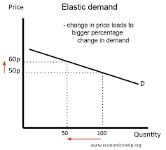
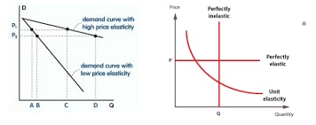
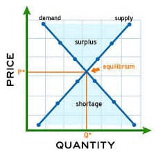
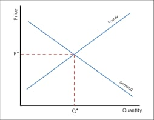
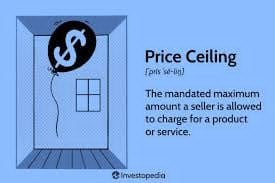
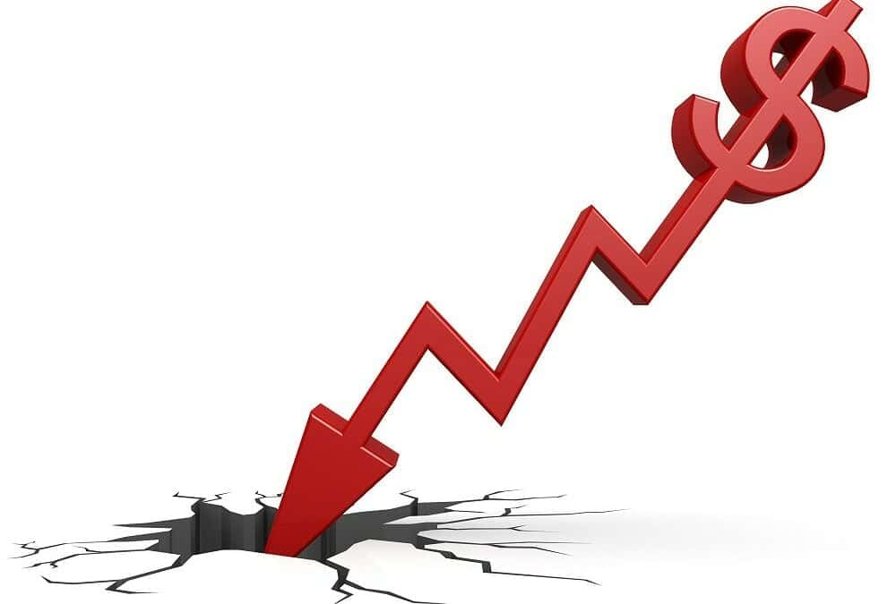

Ito ay ang dami ng produkto na kaya at gustong bilhin sa partikular na panahon at takdang presyo.
Kapag tumaas ang presyo, bababa ang demand; kapag bumaba ang presyo, tataas ang demand.
Tinatawag din ito na Batas ng Demand.
Ito ay isang assumption na presyo lang ang nakaaapekto sa pagbago ng quantity demanded habang ang ibang salik ay hindi nakaaapekto dito.
Kapag tumaas ang presyo ng isang produkto, maghahanap ang mamimili ng kapalit o alternative, na magdudulot ng pagbaba ng demand ng produktong ito.
Ito ay nagsasabi na tumataas ang halaga ng kita kapag bumaba ang presyo ng isang produkto.
Ito ay chart na nagpapakita ng bilang ng kalakal o serbisyo na hinihiling sa mga tiyak na presyo.
Ito ay ang matematikong nagpapakita ng relasyon ng demand sa presyo. Ang formula dito ay Qd=a-bP.
Ito ay ang grapikong representasyon ng batas ng demand.
Ito ay tumutukoy sa dami ng produkto o serbisyo na handa at kayang ipagbili ng produsyer sa iba't ibang presyo sa isang takdang panahon.
Kapag tumaas ang presyo, tataas ang suplay; kapag bumaba ang presyo, bababa ang suplay.
Tinatawag din ito na Batas ng Suplay.
Ito ay isang chart tulad ng demand schedule, pero ito naman ay nagpapakita ng suplay.
Ito ay ang matematikong nagpapakita ng relasyon ng suplay sa presyo. Ang formula dito ay Qs = c + bP.
Ito ay ang grapikong representasyon ng batas ng suplay.
Ito ay ang paraan upang masukat ang pagtugon ng mamimili at nagtitinda sa pagbabago ng presyo.
Mas Malaki ang bahagdan ng pagtugon ng demand o suplay kaysa sa bahagdan ng presyo.
Mas Malaki ang pagbago ng presyo kaysa sa pagbago ng demand o suplay.
Pareho ang bahagdan ng presyo sa bahagdan ng demand o suplay.
Ano mang pagbabago sa presyo ay magdudulot ng infinite na pagbabago sa demand at suplay.
Ang demand o suplay ay hindi tugon sa pagbago ng presyo.
Ang equilibrium o ekwilibriyo ay nagsasabi na walang sinuman sa mamimili at nagpapabili ang gustong baguhin ang kasalukuyang sitwasyon sa pamilihan.
Ang pamilihan ay isang lugar kung saan nakamit ng konsyumer ang sagot sa isang pangangailangan. Masasabi na ang isang lugar ay isang pamilihan kapag mayroong produsyer, produkto, at mamimili.
Ito ay nahahati sa apat na uri, ang monopolyo, monopolistikong kompetisyon, oligopolyo, at monopsonyo. Ang mga indibidwal ay may kontrol sa presyo.
Ito ay may Price ceiling, Price support, at Floor Price. Nakabatay ito sa RA 7581 o Price Control Act.
Ito ang pinakamataas na presyo na itinakda ng pamahalaan upang ipagbili ang isang produkto. Sinasagawa ito upang tulungan at bigyan proteksyon ang mga mamimili sa abusadong negosyante. Tinatakda ito upang mas mababa sa equilibrium price na umiiral sa pamilihan.
Ito ay ginagawa upang tulungan at bigyan ng proteksyon ang mga produsyer.
Ito ang pinakamababa na presyo na itinakda ng pamahalaan upang ipagbili ang isang produkto. Ito ay mas mataas sa equilibrium.





